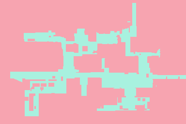

Teal = walkable grid (not final character-footprint collision); red = blocked. Grid is 384 × 256, corresponding to a 1536 × 1024 world.
Important: The concept artwork changes roof shapes, streets and object positions. Do not use it as a drop-in ground texture. Existing game already has shader lighting, water effects and Y-sorted foreground; refine it with aligned masks or extracted sprites instead.
Coordinate inspection: move or tap the map